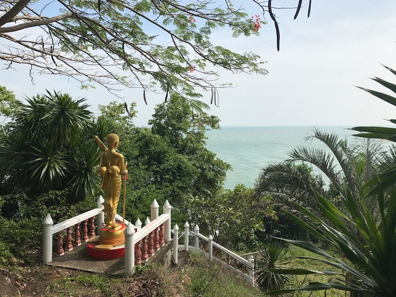
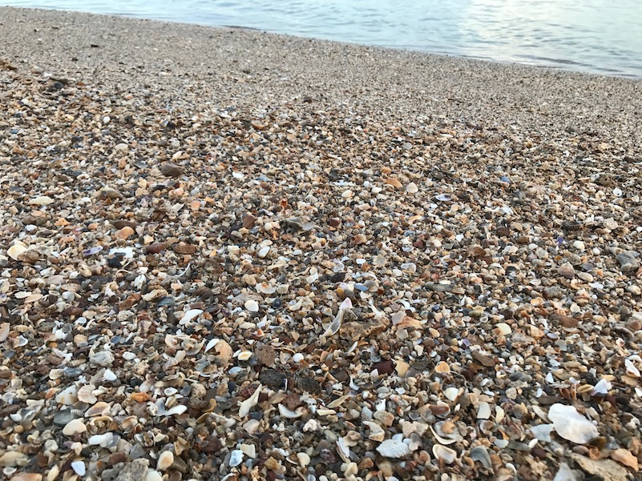
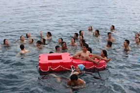
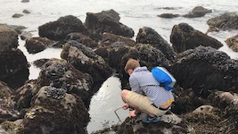
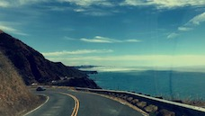
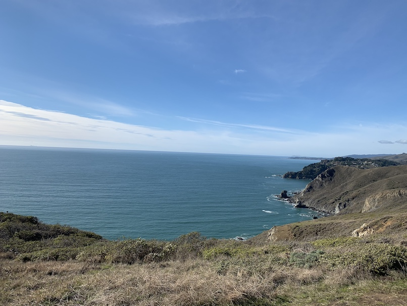
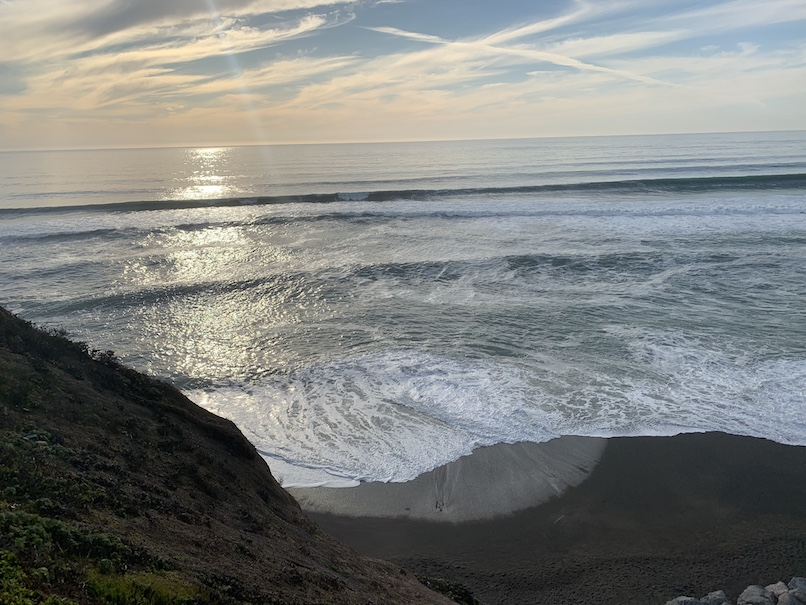
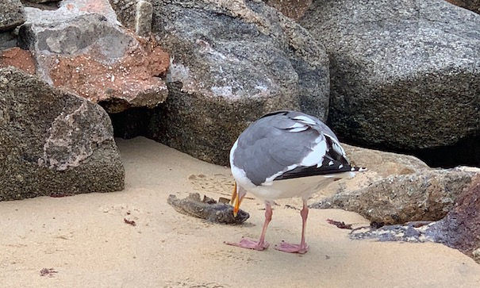

Thailand
Temple overlooking the sea atop a hill.
by Jennifer Grannen

Temple overlooking the sea atop a hill.

More broken shells on the beach than sand.

Swimming in the Adriatic Sea.

Tide pools neighboring an old Russian fort in northern California.

Scenic overlooks of the Pacific along iconic drive.

Hiking pays off with a spectacular view of the ocean.

On an unusually fog-less day, the water sweeps across the beach.

A seagull caught a fish and pecks at it on the sand.